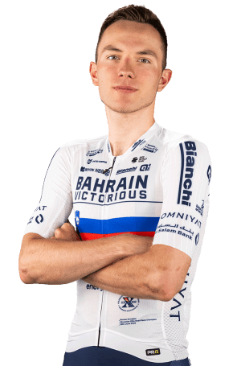

Roman Ermakov
Datos personales
- Roman Ermakov
- 06/10/2004
- Eslovenia
- BAHRAIN VICTORIOUS/brn
- N°73

Datos equipos
- Bahrain Victorious
- CTF Victorious
- Cycling Team Friuli ASD
- Cannibal Team
Temporada 2025
| DATOS | RESULTADOS |
|---|---|
| Tour de Guangxi | Posición 64 |
| Coppa Bernocchi | No terminó |
| Vuelta a España | Posición 78 |
| Tour de Polonia | Posición 61 |
| Tour de Wallonie | Posición 38 |
| Tour de Eslovenia | Posición 34 |
Multimedia
Equipo Bahrain Victorious en la Vuelta Ciclista a España 2026.